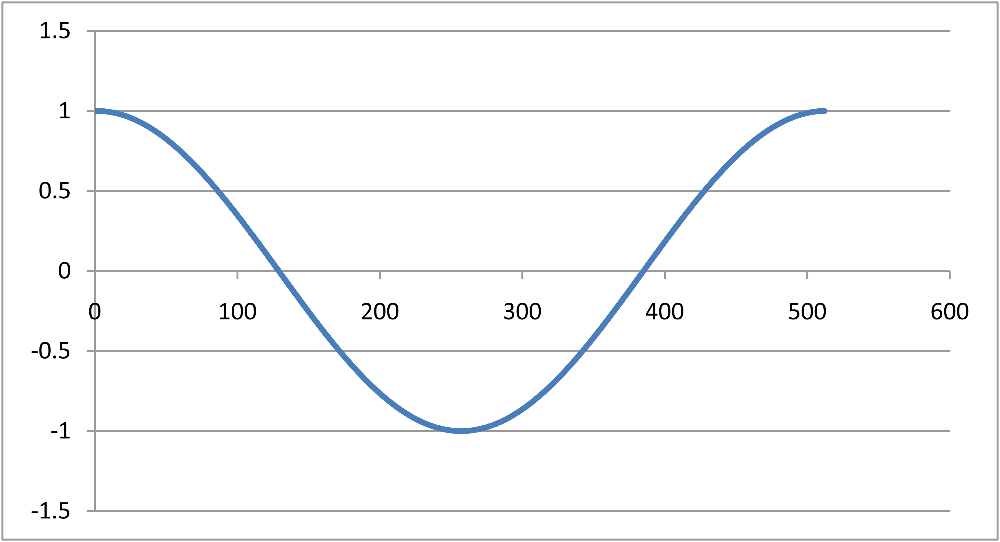
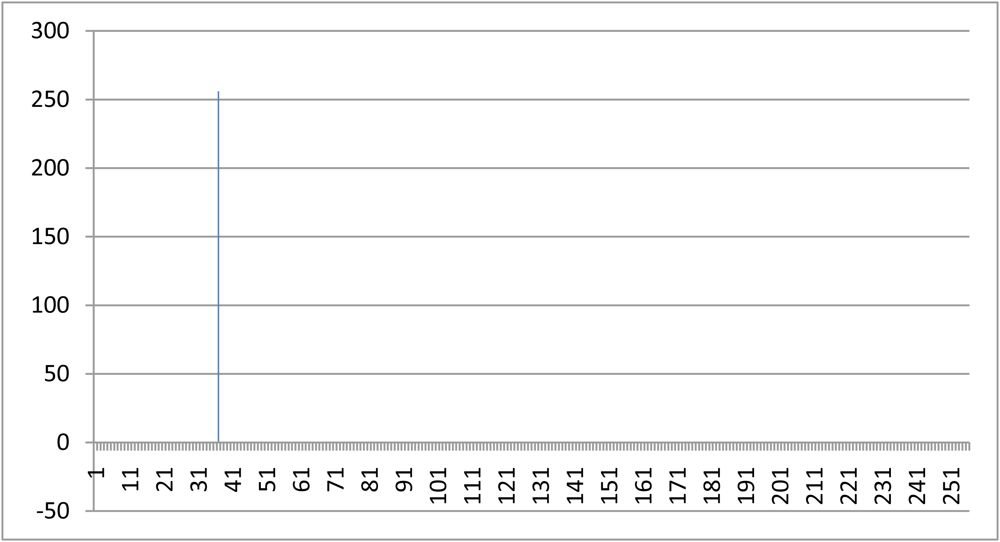
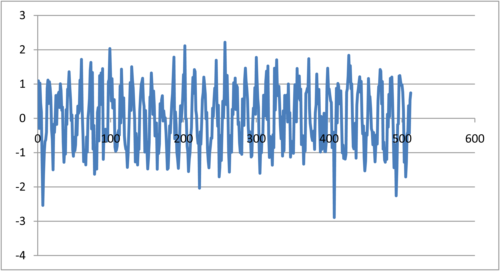
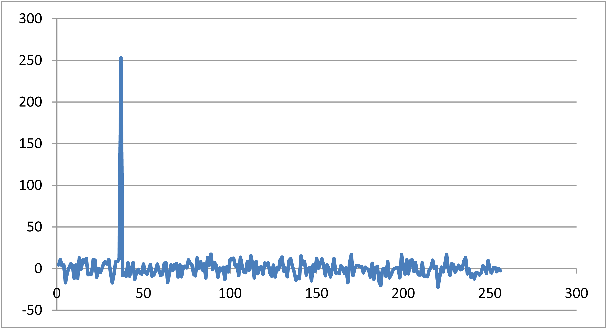

Last Topic: Fourier Transform (FFT)
Check out Fourier test link to down load a copy of the source code
As mentioned in class, data sample size of a FFT must be a power of 2.
Let's use 512, if I create a cos wave over the interval 2 * PI / 512
I get the following plot.

Doing a FFT on that data and recogning that Nyquist frequency is 1/2N,
I need only plot the first 256 data points.
If I change the frequency to 36.0, I get the following plot.

And here is the FFT plot. Note the spike at 36.0 - Yes, it works!

This time I'm using the same frequency plus V_Randomizer.cpp to create
some gaussian noise on the data - here's the result.

Here's is the data transformed. See the noise?

I'm going to loop through the whole data set and set any value lower that 100.0 to zero.
Here is the result:

Ha! The data is filtered.